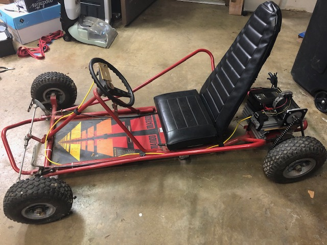

Cycloidal Drive
A (hopefully) short project to create a 3D printed cycloidal drive for an electric go-kart.
Background
In 2019, I acquired the go-kart my wife used as a kid. It had a 10 hp gas engine and high top speed. Far too powerful for my young son. I used an old teknic servo motor and converted it to an electric go-kart. The servo motor doesn’t have the torque to push my son up any grade or through the grass. I want to design a cycloidal gearbox to increase the torque. I may find that 3D printed parts don’t cut it, but we’ll cross that bridge when we get to it.

Requirements
- Fits inline and no larger than NEMA 34 mountings
- 3D printed construction with purchased hardware and minimal machined components
- 20:1 gear reduction
- Design scalable down to 10:1 gear reduction
- 2 cycloidal discs to reduce vibration
Git Repo
Project Process
The project required that I learn substantially more about cycloidal drives and their complexities. Like all things in life, the challenge was in all the details’ execution rather than the high-level design. Once the cycloidal gear profile was created, all the challenges were in making a mostly 3D-printed gearbox.
Creating the Cycloidal Gear Profile
Cycloidal drives require a particular profile. After picking through this research paper, I found an explicit equation for the cycloidal gear profile. Playing with parameters in an online graphing calculator gave reasonable-looking gear profiles for a 10:1 and a 20:1 gear reduction. The equations for these profiles were complex enough to get saved as a text file in the git repo to make future development easier.
Making a Prototype
With a mathematically functional gear profile in hand, it was time for me to make a real gearbox. I opted to start small and make a low-fidelity, hand-operated mock-up to verify the gear profile’s functionality. The CAD was done in Fusion 360 and can be found here. I had to change filament spools before the 3D printer could complete all the parts. This change created an excellent two-tone prototype that made it easier to see what was going on in the gearbox. It worked well enough to demonstrate the concept. The tolerances were far too loose to be a functional gearbox. With lessons learned, I moved on to bigger and better gearboxes.
Making the Real Gearbox
The CAD modeling for the real gearbox began reasonably smoothly as I had a working gearbox. The problems that I ran into were based entirely on reducing costs. As I looked for bearings available off the shelf, I found that small-diameter bears are not cheap. It turns out that there is a reason most gearboxes are expensive: tight tolerances and costly bearings. To limit costs, I opted for bronze bushings instead of rolling element bearings. After completing the CAD found here, the 3D printer began its work. The printing went smoothly. Assembly went less smoothly. There were multiple fit issues due to the variation in 3D printing tolerance on my low-cost, consumer-grade printer. A vice and hammer took care of the assembly problems. Surprising no one, bronze bushings have substantially more drag than rolling element bearings. The assembled gearbox did not come close to rotating.
Final Gearbox for the Go Kart
At this point, I had spent as much on parts for a cycloidal gearbox as a cheap planetary gearbox costs direct from China. Having gained the design experience but being unable to redesign and rebuild the cycloidal gearbox without significantly more money, I opted to cut ties with the project. The overarching goal was to make my son’s go-kart more functional. Wanting to avoid a sunk cost fallacy, I humbled myself. I bought the cheap planetary gearbox from Amazon. 4 weeks later, the go-kart was operational again, and my son was thoroughly enjoying it.